Your Team + AI.
At Scale.
How a 100-person team ships production software with autonomous coding agents.
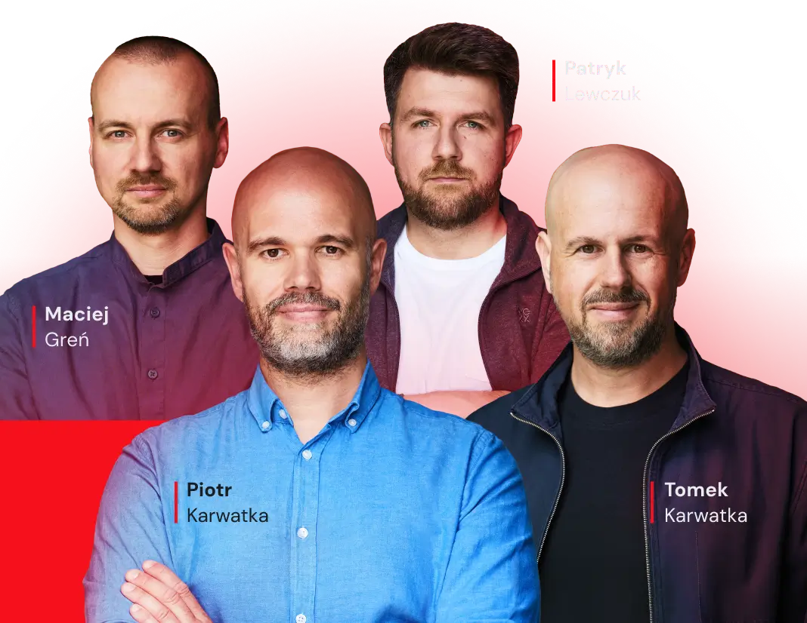
What actually changed — and what didn't.
First, the honest picture of building software with autonomous agents.
Vibe coding vs. agentic engineering
Two modes, two use-cases. When each one wins — and where they break.
Developers become product people
What the role turns into. What survives: communication, taste, judgment.
The economics
2h feels like 8h. Output ≈ 3 days. Every company as a token factory.
Where AI still needs a human
Context, security, business logic — the omni-super-senior with no self-motivation.
The practice: how 100+ agents stay coherent.
Then, the concrete machinery that ships production code at scale.
Monorepo & AGENTS.md
One tree, a task router, context next to the code.
Spec-driven & visual specs
Specs first, ASCII/HTML mockups, atomic tasks, subagent loops.
Skills & the pipeline
25 autonomous skills — plan, review, QA-gate, merge.
Worktrees, tests & CI
Parallel agents, 1,400 Playwright, 3,980+ unit tests, real gates.
Cezar & Sandboxes
The orchestrator and zero-setup cloud dev environments.
The AI Tech Leaders program
How your team learns to run all of this — safely.
Start with 80% done.
…and compose the remaining 20% with Codex, Claude & a small team.
We open-sourced our whole toolchain — for this cohort.
Skills, Cezar and Sandboxes are public so participants of AI Tech Leaders can run the exact pipeline you'll see today — in their own repos.
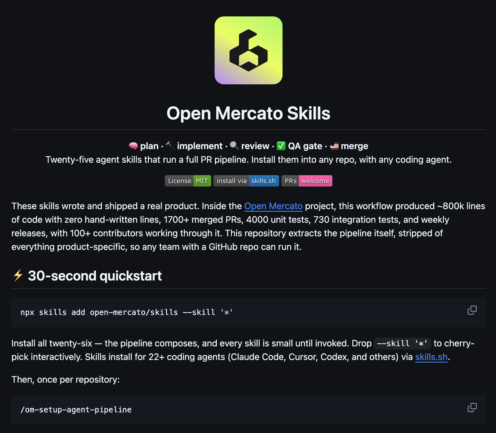
Skills
25 agent skills — the full PR pipeline, MIT.
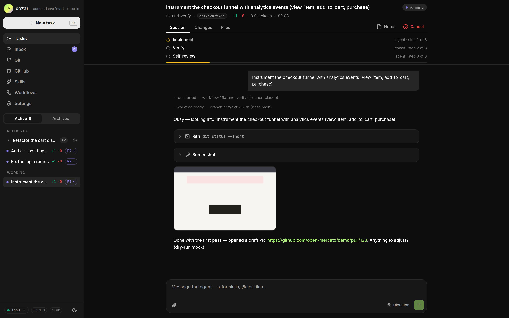
Cezar
Parallel coding-agent orchestrator.
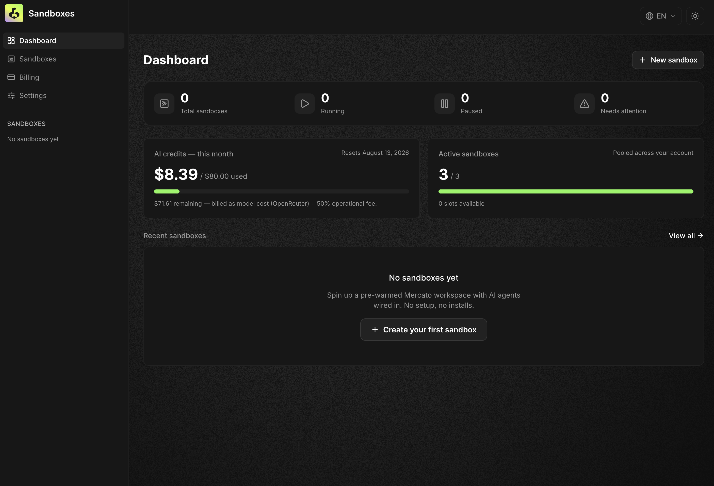
Sandboxes
Cloud dev envs, agents wired in.
Vibe coding vs. agentic engineering.
Both have their place. We use both — for different things.
Vibe coding
Prototypes, demos, throwaways. Fast — until the app grows up.
→ github-janitor · internal tools
deprecated — replaced by Cezar (more on that later)
Agentic engineering
Process stays: BA → code → review → ship. AI owns code. Humans own the rest.
→ Open Mercato · product development
Developers become product people.
The code writes itself. The focus shifts to vision, taste, and articulation.
The developer role
Hiring: taste, delegation, code review. The 10× basement-coder — that's AI now. Juniors skip coding; system thinking is craft. Assembly → Turbo Pascal, all over again.
Everything around the code
Communication — still the moat. UX, PM, Scrum Master — crucial. BAs, JIRA, security, DevOps — still prevail. Agents need process to scale.
What works for us.
Six things that turned 100+ agentic contributors into one coherent codebase.
One tree. Every module. Full LLM context.
- Every agent reads the same tree — no stitched-together repos.
- Module boundaries survive, even with 100+ contributors.
- Loose API docs were tried — complexity without context wins.
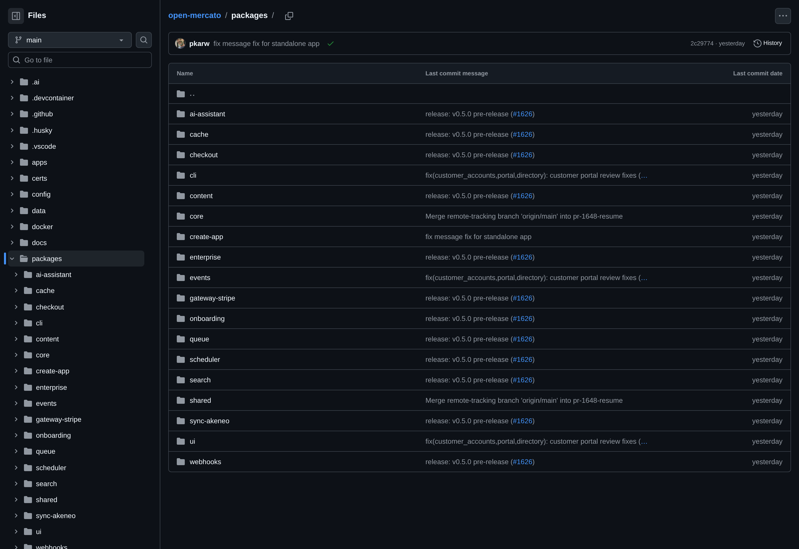
AGENTS.md + task router.
- Root AGENTS.md is a table: task → guide path.
- Each folder carries its own AGENTS.md — imports, patterns, constraints.
- ~200 instructions per file is the ceiling — follow rate drops beyond.
- Guidance lives next to the code it governs.
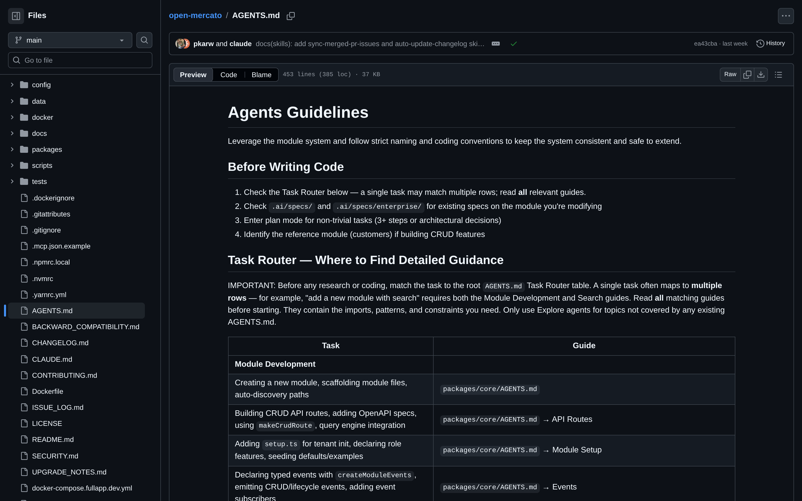
Specs first. Code after.
- Every non-trivial change starts as SPEC-XXX.md in /.ai/specs.
- LLM drafts via the custom om-spec-writing skill; humans review and approve.
- 33+ specs shipped — numbered, dated, release-tagged.
- Claude writes noticeably better specs than Codex (for us).
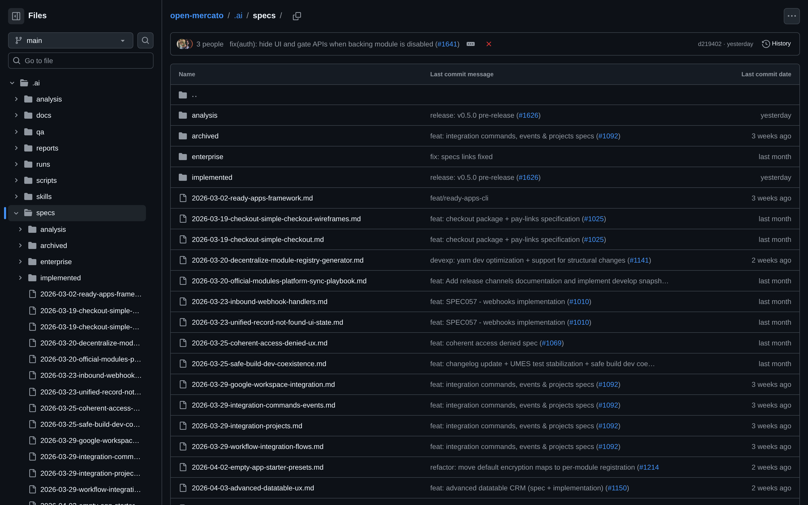
Skills the agents actually reach for.
Small, composable, scoped. Each one encodes a repeatable workflow with the right context.
om-auto-review-pr
First-pass code review on every PR — style, risk, test coverage, open questions.
om-auto-fix-issue
Takes a GitHub issue, scopes it, opens a draft PR with a working fix.
om-auto-create-pr
Reads a branch, writes the description, links issues, opens the PR.
om-auto-continue-pr
Picks up a stalled PR — addresses review comments, pushes updates.
Five agents. Five branches. Five Postgres instances.
- git worktree per agent — no branch-switching dance.
- Ephemeral env: testcontainers brings up Postgres, Redis, workers.
- Each agent runs its own integration tests on its own DB.
- Agents never share state — parallel without the chaos.
Autonomous skills. Game-changer.
- 25 agent skills — plan, implement, review, QA-gate, merge.
- The pipeline that shipped ~800K LoC, zero hand-written.
- Installs into 22+ coding agents. Technology-agnostic.
- MIT-licensed. PRs welcome.
$ /om-setup-agent-pipeline · once per repository
AI writes it. Tests keep it honest.
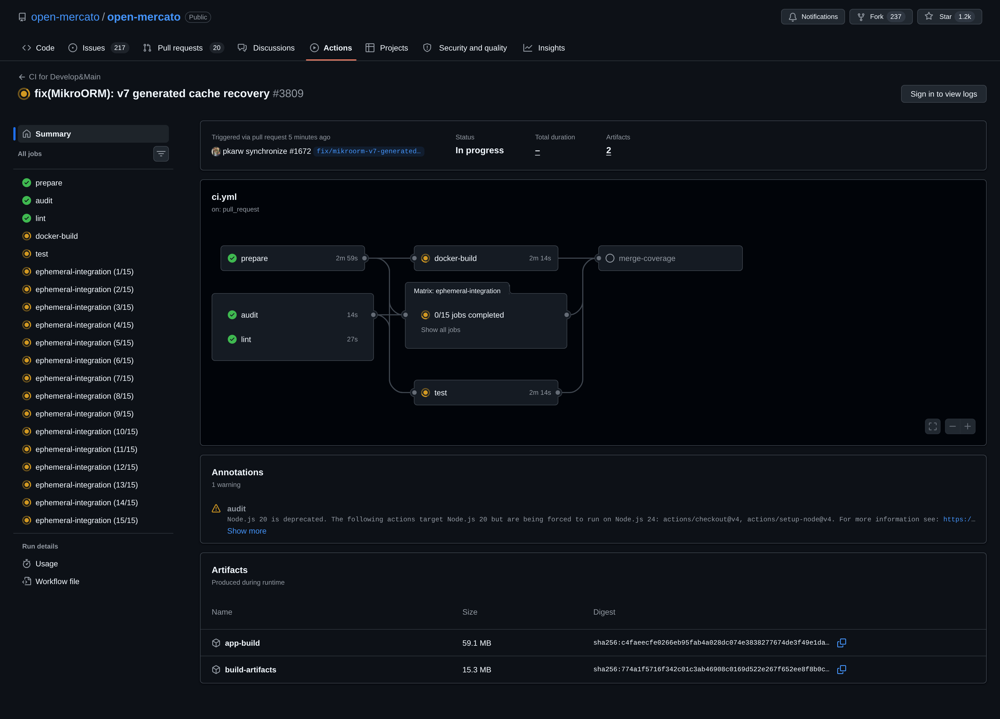
UI mockups as specs.
ASCII, sketches, HTML mockups. Agents turn them into real UI.
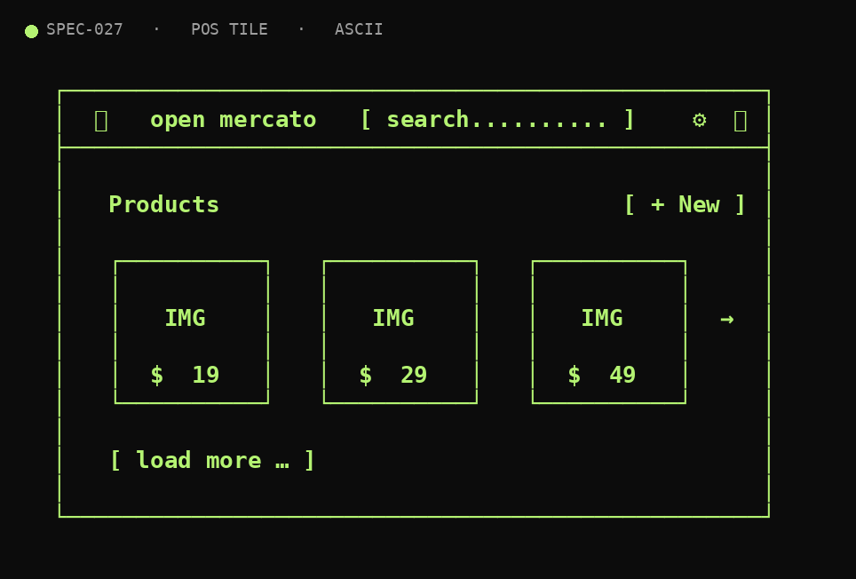
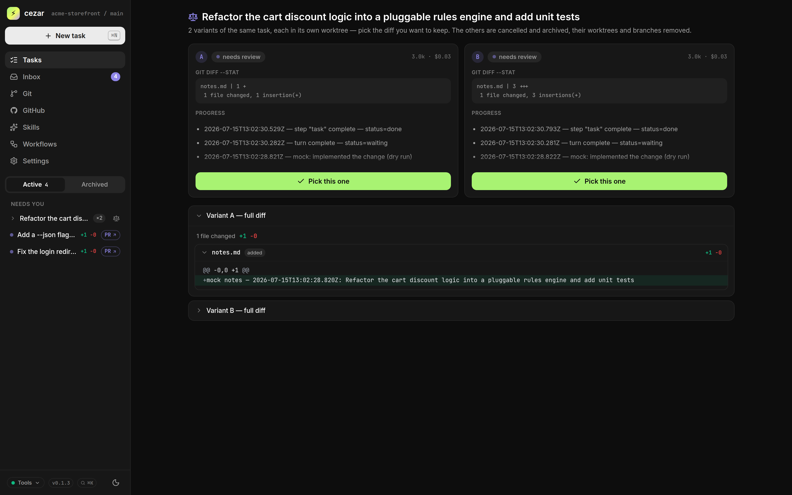
Split the spec. Loop the agents.
2. For each task:
→ run it in a subagent
→ unit tests MUST be green
→ if UI touched OR every 5–6 tasks:
Playwright via om-integration-tests
→ commit. move on.
3. Stop when the queue is empty and all green.
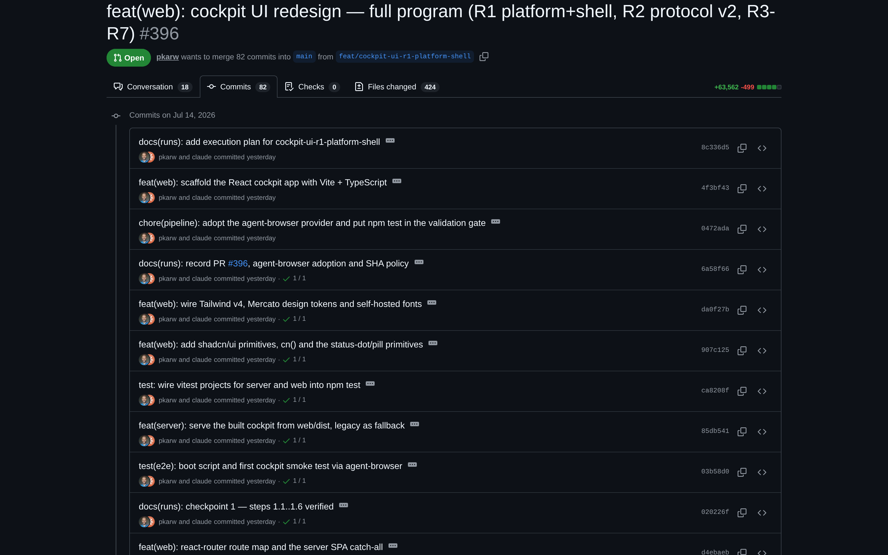
One PR. 147 commits. Days of agent work.
cezar/pull/396 — an agent shipping a whole phase, atomic commit by atomic commit.
Teach the agents. Forever.
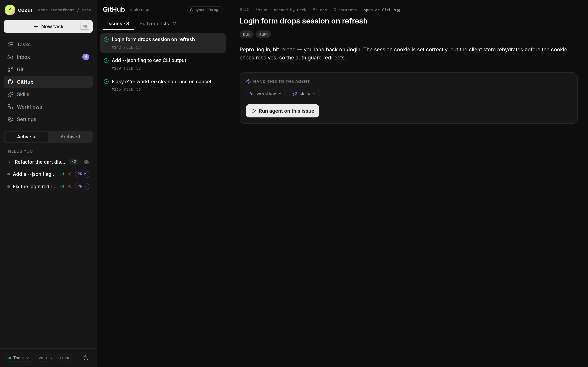
The parallel coding-agent orchestrator.
- Task queue for every agent — one branch, one worktree.
- Skills, schedules, memory, webhooks — batteries included.
- Runs Claude Code, Codex, or any coding agent behind one CLI.
- Solves multi-agent coordination — no more merge storms.
$ npx cezar-cli
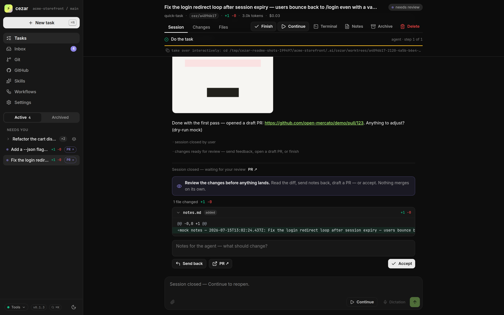
UX is still human. AI helps.
- Our designer Oliwia Zielińska designs with AI tools — kept in sync with Figma.
- Business-consulted — still irreplaceable.
- AI for the chores: triage, specs, handoff.
- ds-guardian: code ⇄ Figma, tokens in sync.
- Design-system drift caught automatically.
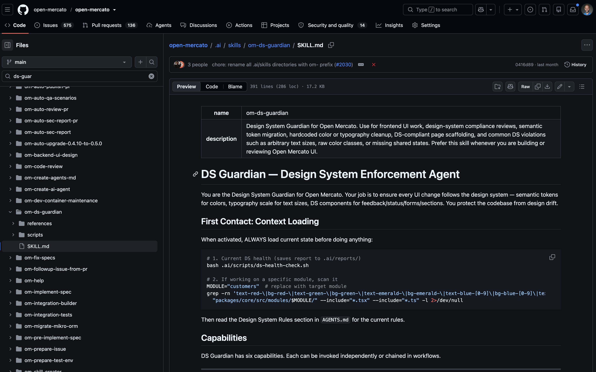
Claude, Codex — and the open-weight council.
Frontier models draft. A six-model review council checks the work — open-weight models included. Different priors → fewer blind spots.
| Reviewer | Family | Openness | SWE-bench V. | What it brings |
|---|---|---|---|---|
| claude-fable-5 | Anthropic | proprietary | — | specs, docs, long sessions · code-review host |
| gpt-5.6-sol | OpenAI | proprietary | — | sophisticated coding, patient CI loops |
| deepseek-v4-pro | DeepSeek | open-weight | 80.6% | raw power · 93.5 LiveCodeBench · 1M context |
| kimi-code / k3 | Moonshot | open-source | 76.8%* | 2.8T params — largest OSS model · agentic leader |
| glm-5.2 | Zhipu | MIT | 77.8% | 744B MoE (40B active) · 1M context |
| mimo-v2.5-free | Xiaomi | open · free | — | the budget lens — surprisingly sharp findings |
Things we learned. Do these.
"Fix it until CI is green."
gh + "keep trying until green". Codex waits 40–50 min between CI runs. No hand-holding.
Run integration tests, fix causes — per each PR.
Not the symptom. Not the flake. The root. One pass every PR, minimum.
Push unit coverage to 100% with LLMs.
Scan V8 coverage reports. Ask the model to cover the gaps. Repeat until green.
≥ 1 unit test per PR. Always.
Tons of tests — the refactor safety net. Agents refactor fearlessly when tests pass.
High coverage = confidence. Even human-written.
The statistic protects you. Measure coverage, not authorship.
Have QAs author deep integration scenarios.
The skill runs tests. It can't imagine business edge cases. QAs know the weird paths.
Open challenges.
Where we're stuck. If you've cracked any of these — please talk to us.
Multi-agent coordination without conflicts.
→ check Cezar!
Reviewing 1,500+ files on a single branch.
Too big for humans, too big for one context window. /ultrareview helps — not fully.
Token spend on multi-agent runs.
Parallel agents burn tokens fast. Cost vs. quality is still guesswork.
Defining optimal completion criteria.
Green tests ≠ done. Coverage ≠ done. The bar is fuzzy per task type.
AI-assisted engineering. Zero setup.
- Cloud sandbox with Open Mercato in dev mode — ready in 30 seconds.
- Codex, Claude Code, Open Code pre-installed and authenticated.
- VS Code in the browser + web shell with full TUI/TMUX.
- Live preview URLs, GitHub wired in, DevOps managed.
- Production-grade in 1–2h: RBAC, encryption, multi-tenancy included.
Everything we showed — released.
The skills, the orchestrator, the sandboxes. Open, installable, waiting for your repo.
Open Mercato
The AI-supportive ERP/CRM framework itself. Start with 80% done.
github.com/open-mercato →
Skills
25 agent skills running a full PR pipeline. Any repo, 22+ agents.
/skills →
Cezar
The parallel coding-agent orchestrator. Worktrees, review gates.
/cezar →
Sandboxes
Cloud dev sandboxes with agents wired in. Ready in 30 seconds.
sandboxes.openmercato.com →
From "I use AI to code" to "I run a large project built by AI."
Every dev now "uses AI". Few know how to manage it in production. A hands-on program for engineering teams — 4 weeks, 25 lessons, live consults, sandboxes.
Vibe coding degrades at scale
Great for 2 weeks, then chaos — inconsistent code, agents "doing their own thing", fixing more than building.
Senior devs, tech leads & teams
People who code professionally — and 5-person pilot squads from larger orgs rolling AI out across the company.
1M+ lines shipped by AI
The exact workflow behind Open Mercato — taught by the people who built it, not theorists.
Five stages. 25 lessons. Four weeks.
The signature framework: one repeatable software-delivery lifecycle for autonomous agents — plus the team layer around it.
Real work with agents. Not vibe coding.
- How large teams actually work with coding agents: tickets, PRs, automated review, integration tests, security, compliance.
- Battle-tested on Open Mercato — 100+ contributors, 1,700+ merged PRs, zero prod fuckups.
- A framework for your stack: Python, Go, Java, .NET, TypeScript.
- Spec-driven development · PR · code review · QA · UX in the AI era.
Start autumn 2026.
Don't miss it.
A practical program for technical teams that want to work with AI — by Piotr Karwatka & the Open Mercato team.
Limited to 1,000 participants — organizations first. Join the waitlist and we'll send the agenda & start dates.
Thanks.
Let's keep the loop going — reach out.